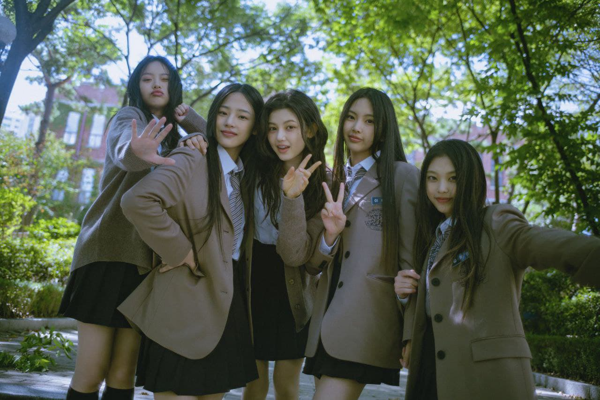
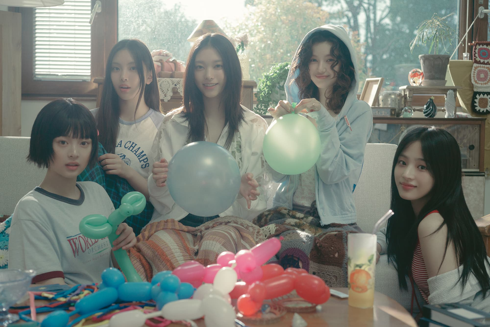
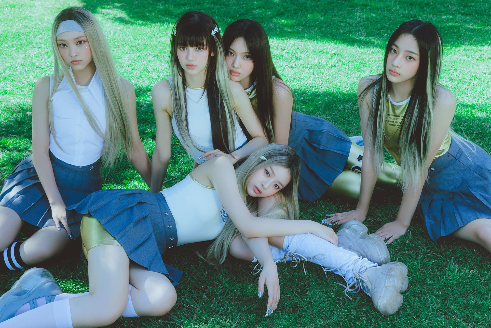
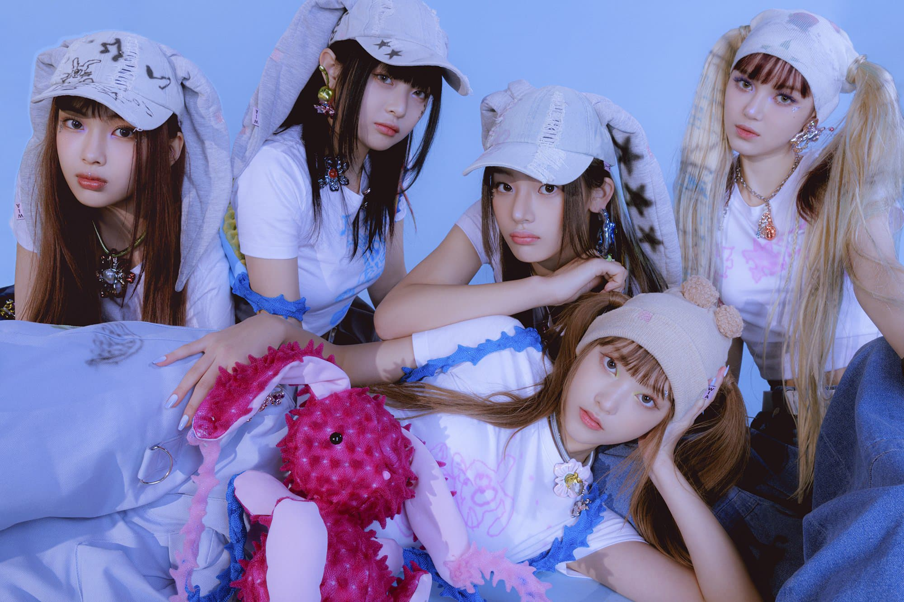
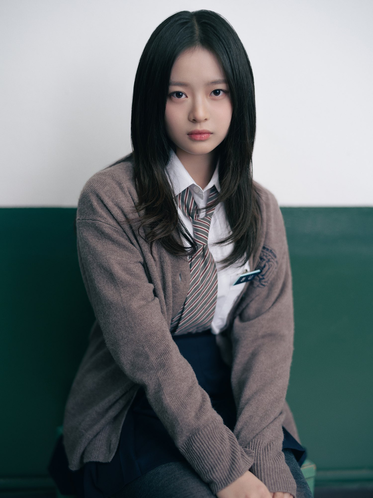
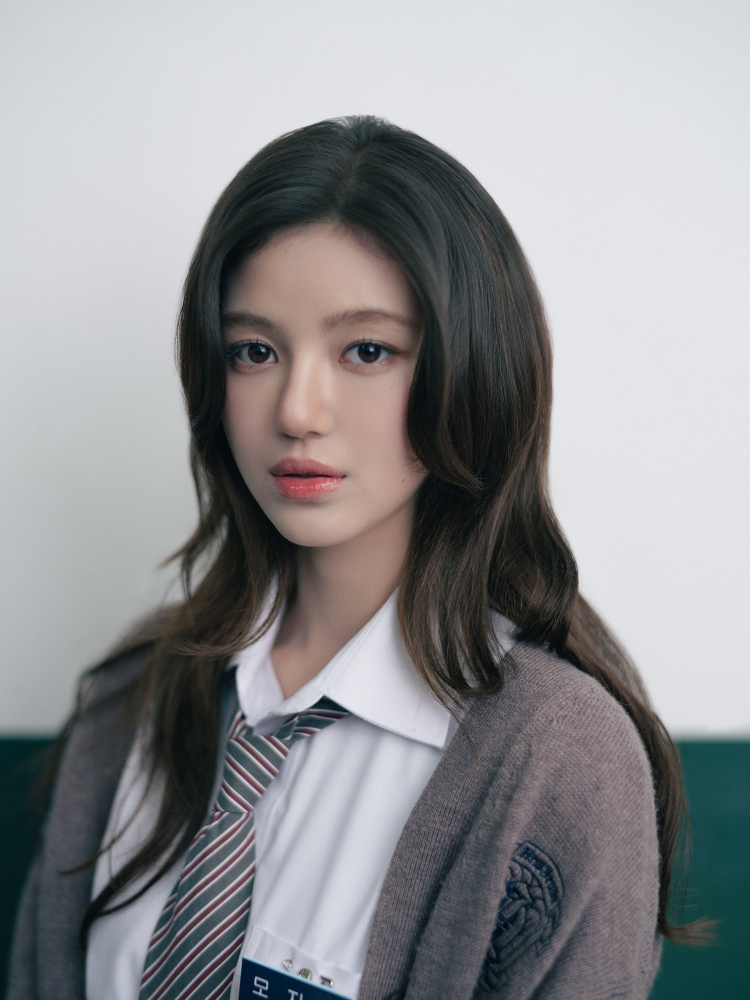
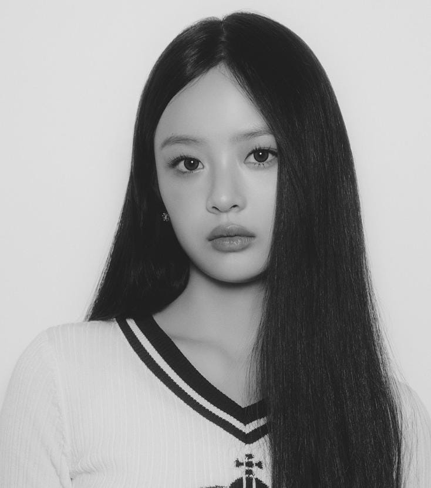

Hello, We Are NewJeans!
NewJeans (뉴진스) is a five-member K-pop girl group formed by ADOR, consisting of Minji, Hanni, Danielle, Haerin, and Hyein. Renowned for their refreshing 'girl next door' charm, they have captured global attention with their youthful energy and authentic image. Their musical style draws inspiration from the 1990s and 2000s, blending nostalgia with modern trends to create a distinctive sound.
The Members
-

-

NewJeans Profile

Hanni Pham
Hanni
Hanni Phạm is a Vietnamese-Australian singer-songwriter, dancer, and composer under ADOR and HYBE Labels.Born and raised in Melbourne, Australia. At a young age, she showed passion for music, leading to her auditioning for 'The Voice Kid Australia'. Soon after, she participated in the 'Plus Global Audtion' and became a trainee under Source Music. Eventually, she joined the label ADOR and debut as a member of NewJeans.
Kim Minji
Minji
Kim Minji is a South Korean singer-songwriter, dancer, and composer under ADOR and HYBE Labels. She is best known as the oldest member of the girl group NewJeans. Born and raised in Chuncheon, South Korea, Minji moved to Seoul and eventually began training under Source Music. Following this, due to internal changes within the company, Minji joined the label ADOR, leading to her debut as a member of NewJeans.
Login into your WEVERSE account